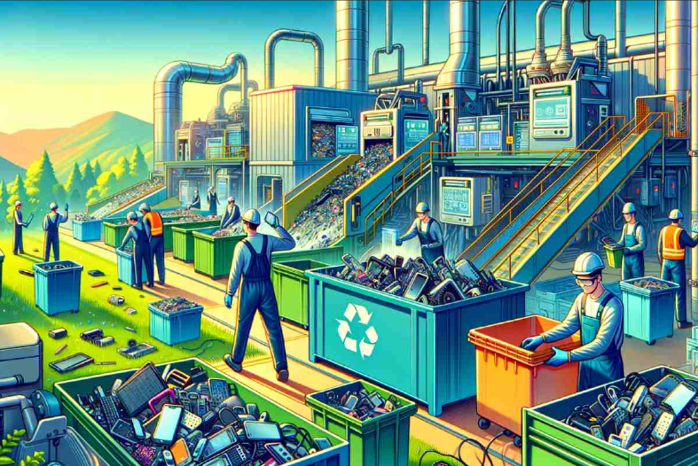
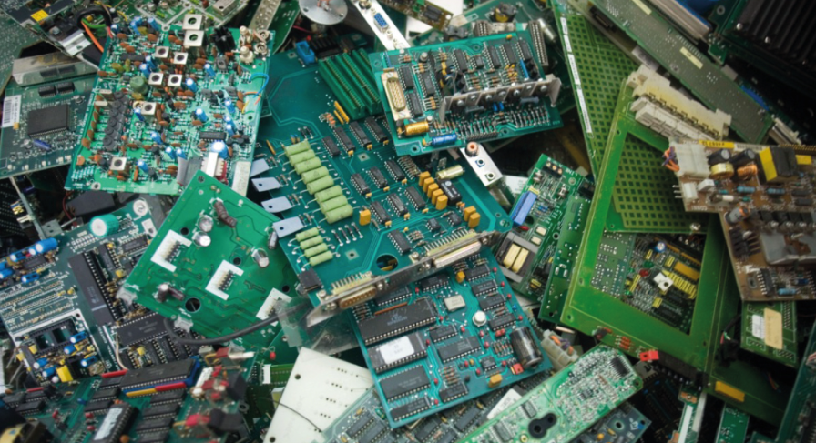
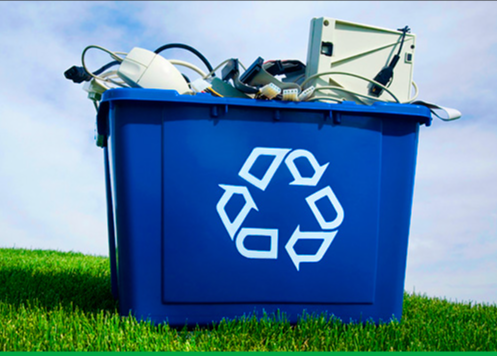
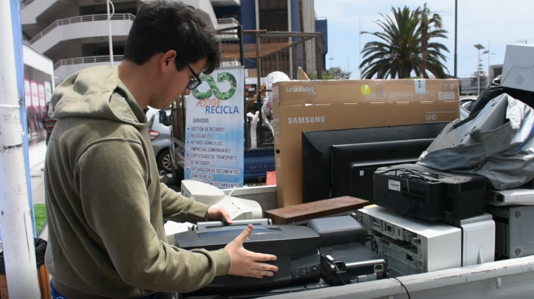

Impacto Ambiental
En CodeForce, nos enorgullece contribuir significativamente a la sostenibilidad ambiental a través de nuestras operaciones de reciclaje. A continuación, presentamos algunos de nuestros logros:
10+ Toneladas Recicladas
Reciclamos más de 10 toneladas de desechos electrónicos en el último año.
500+ Empresas Asociadas
Colaboramos con más de 500 empresas para gestionar sus residuos electrónicos de manera responsable.
100% Certificación Ambiental
Nuestros procesos cumplen con las normativas ambientales internacionales.
Reducción de CO₂
Contribuimos a la reducción de más de 50 toneladas de emisiones de CO₂ al año.
Nuestros Logros
- **Alianza con ONG Ambiental:** Colaboración para promover campañas de concientización sobre el reciclaje.
- **Proyecto de Reforestación:** Donación de una parte de nuestras ganancias para la plantación de árboles.
Metas Futuras
Estamos comprometidos con la mejora continua y tenemos ambiciosas metas para los próximos años:
- Incrementar nuestra capacidad de reciclaje en un 50%.
- Expandir nuestras operaciones a nivel nacional e internacional.
- Desarrollar nuevas tecnologías para optimizar el proceso de recuperación de materiales.
- Fortalecer alianzas con más empresas y organizaciones para ampliar nuestro impacto.
Galería de Impacto



